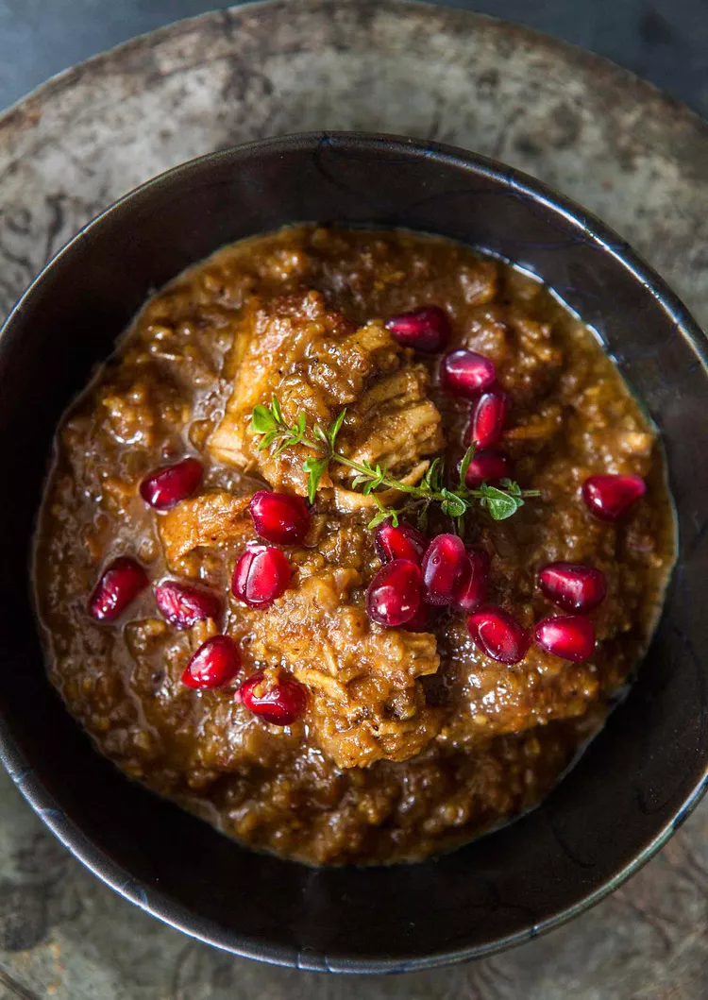

Note: Make your own pomegranate molasses by simmering 1 cup of pomegranate juice until it reduces to 5 tablespoons of syrup.
You can toast the walnuts in one of two ways. You can either spread them out in a single layer in a large skillet, and toast them on medium high heat, stirring frequently until lightly toasted, OR you can spread them out in a single layer in a baking rimmed baking sheet, and toast at 350°F in the oven for 8 to 10 minutes. In either case, once toasted, remove from heat and allow to cool. Once cool enough to handle, pulse in a food processor or blender until finely ground.
In a large pan, heat 1 tablespoon of butter and 2 tablespoon of olive oil over medium-high heat. When the butter has melted, pat the chicken pieces dry again and place the chicken pieces in the pan, working in batches if necessary to not crowd the pan, and cook until golden brown on all sides. Sprinkle the chicken with salt while they are cooking.
Feel free to cook it with meet balls or duck if you like!
Use a slotted spoon or tongs to remove the chicken from the pan, set aside. Add a tablespoon of butter and a tablespoon of oil to the pan. Lower the heat to medium low. Add chopped onions to the pan and sauté until translucent, stirring on occasion to release the browned bits from the bottom of the pan.
Return the chicken pieces to the pan with the onions. Pour 2 cups of chicken stock over the chicken and onions. Bring to a boil, reduce to a simmer, cover and simmer gently for 30 minutes.
Stir in the ground walnuts, pomegranate molasses, sugar, and spices. Cover and cook on very low heat for 1 hour, stirring every 20 minutes or so to prevent the walnuts from sticking to the bottom of the pan. Remove from heat and adjust sugar/salt to taste. At this point the chicken should be fall apart tender.
If you want to have it a bit more sweet, feel free to add sugar, but it's optional and not required in traditional recipes.
Garnish with pomegranate seeds. Serve over parsi pulao or other favorite rice.